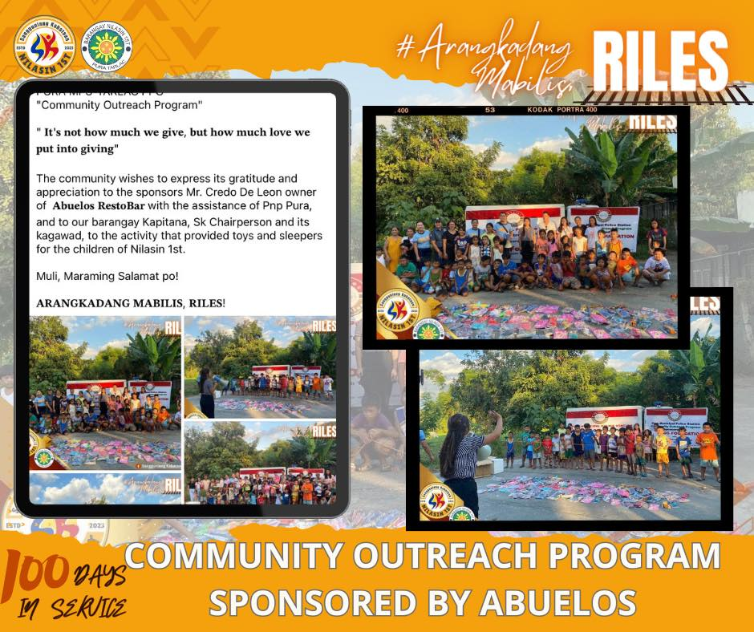
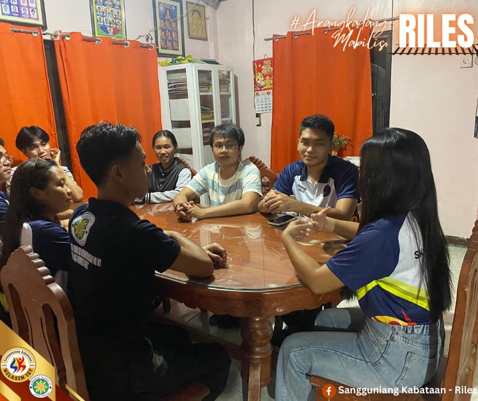

City of Pura-Tarlac
SANGGUNIANG KABATAAN
sa RILES, serbisyo'y MABILIS!

The Sangguniang Kabataan serves as the governing body of the youth assembly of every barangay. Elected by the members of the Katipunan ng Kabataan in elections conducted by the Commission on Elections (COMELEC), its purpose is to represent the youth community and address their needs and concerns through various initiatives and programs.
The Sangguniang Kabataan (SK) is committed to achieving several objectives and goals within the community. Our primary advocacy includes empowering the youth through education, promoting youth participation in local governance, organizing community development projects, and advocating for youth rights and welfare. We aim to create a supportive environment that fosters leadership, creativity, and civic engagement among the youth, leading to positive social change and community development.
Community Engagement
The Sangguniang Kabataan (SK) is committed to achieving several objectives and goals within the community. Our primary advocacy includes empowering the youth through education, promoting youth participation in local governance, organizing community development projects, and advocating for youth rights and welfare. We aim to create a supportive environment that fosters leadership, creativity, and civic engagement among the youth, leading to positive social change and community development.